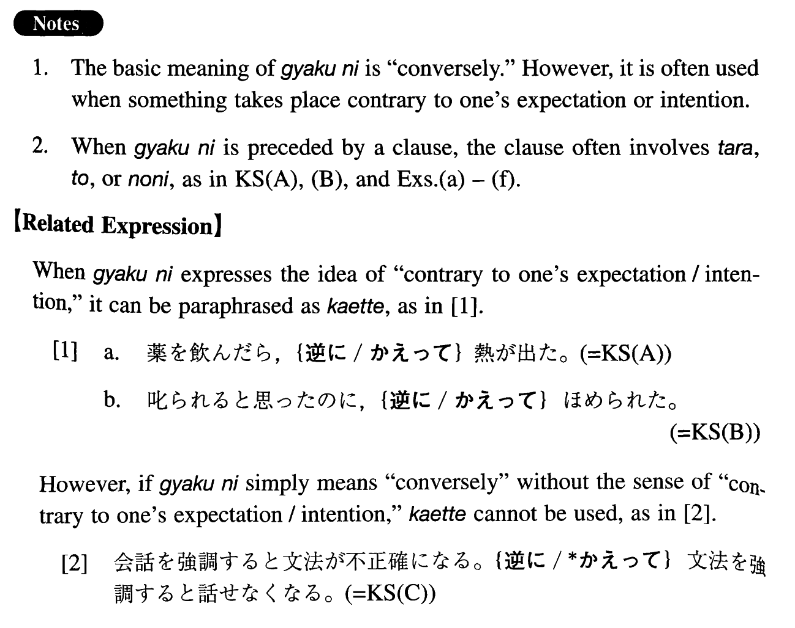

- (ksa).
- 薬を飲んだら、逆に熱が出た。
- Contrary to expectations, when I took medicine, I got a fever.
- (ksb).
- 叱られると思ったのに、逆にほめられた。
- I expected to be scolded but, contrary to my expectation, I was praised.
- (ksc).
- 会話を強調すると文法が不正確になる。逆に文法を強調すると話せなくなる。
- 1. If we emphasize conversation, their grammar becomes inaccurate. 2. Conversely, if we emphasize grammar, they are (literally: become) unable to speak.
- (a).
- しばらく練習をしなかったら、逆に成績が伸びた。
- I didn't practice for some time; then, contrary to expectations, my performance improved.
- (b).
- 寝すぎると、元気にならないで、逆に疲れてしまう。
- If you sleep too much, you don't feel well; instead (literally: conversely), you feel tired.
- (c).
- 文句を言ってやろうと思っていたら、逆に文句を言われてしまった。
- I was thinking of complaining; then, contrary to my intention, I had to listen to complaints.
- (d).
- 一生懸命仕事をしたのに、逆に仲間に嫌われてしまった。
- I worked very hard, but, contrary to expectations, my peers hated me.
- (e).
- ガールフレンドを喜ばせようとしたのに、逆に怒らせてしまった。
- I tried to please my girlfriend, but, contrary to my intention, I made her angry.
- (f).
- その試験に落ちるだろうと思っていたのに、逆に一番で通ってしまった。
- I was expecting to fail the exam, but, contrary to my expectation, I passed it in first place.
- (g).
- 人に親切にすることは一般にいいことだと考えられている。しかし、親切にすることが、逆に人を傷つけることもある。
- In general, being kind to people is considered to be a good thing. However, contrary to one's intention, being kind sometimes hurts people.
- (h).
- この子は優しくすると付け上がる。逆に厳しくするとすぐ泣く。
- If I try to be gentle to the boy, he takes advantage of my gentleness. Conversely, if I try to be strict, he cries readily.
- (i).
- いい演技をする為には緊張しすぎてはいけない。しかし、逆にリラックスしすぎてもいい演技は出来ない。
- In order to perform well, you mustn't be too tense. But, conversely, if you are too relaxed, you cannot perform well, either.
